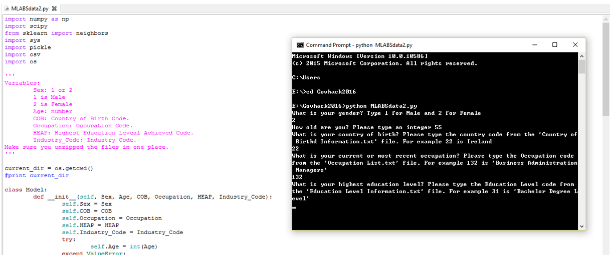

Machine_Learning_Model

Version: 1.1.1
This Python file uses the Nearest Neighbour Machine Learning algorithm to learn the patterns in the published synthetic temporary skilled migrants data from ABS. This dataset
is a sample of synthetic data including people's age, gender, country of birth, education level, occupation, industry and state where they live in. The
machine learning algorithm looks for patterns on this data to classify State based on input data: age, gender, country of birth, education level, occupation, industry.
Based on the user (migrants) inputs (such as user's age, gender and education levels) the algorithms looks for the historical data from the synthetic
ABS employment dataset to find the state where the majority of people with a similar background lives in. Then the Python code filters the
Department of Employment's job vacancies data to filter for jobs listed under that state. The job list is saved in "jobs.csv" file in the same directory.
The idea is for the user to find the state that the majority of people lives in with a similar background. It also enables employers to find out in which area they are
likely to find their desired employees, hence they can make their recruiment process more targeted.
Please make sure you unzip and extract all files into the same directory.
https://github.com/apizzadata/Machine-Learning-Model-of-ABS-Employment-data
COPYRIGHT AND LICENSE:
This is published under the MIT License.
REQUIREMENTS:
$ python --2.6 or later
You can download python at:
http://www.python.org
$ Numpy -- 1.8.1 or later
$ Scipy -- 0.14.0 or later
$ scikit-learn
TO INSTALL:
1. Download and unzip the files into a directory.
2. Open a command line window in the directory above.
3. Run "python Machine_Learning_Model.py" and follow the instructions.
list of files contained is:
Machine_Learning_Model.py
MLModel.pkl
JPO-coded.csv
Country of Birth Information.txt
Education Level Information.txt
Industry List.txt
Occupation List.txt